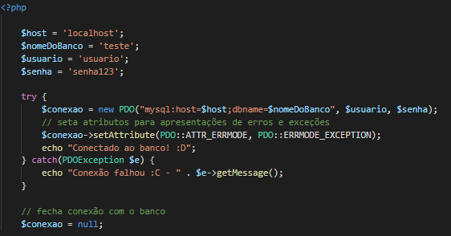
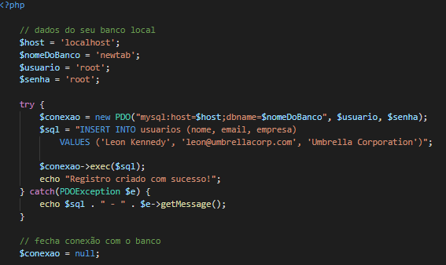

PDO (PHP Data Object) é uma extensão da linguagem PHP para acesso ao banco de dados. Possui suporte a vários drivers de banco, além de preparedstatement que valida a query antes de ser executada a fim de prevenir ataques SQL injection.
Para abrir uma conexão, precisamos passar as credenciais de acesso e indicar o host do respectivo banco de dados para a instância do PDO. Como estamos trabalhando localmente (ferramentas instaladas na própria máquina), definimos o host como localhost mas também poderia ser 127.0.0.1.

NOTA:
Os atributos PDO::ATTR_ERRMODE e PDO::ERRMODE_EXCEPTION são utilizados para apresentação de relatório de erros e exceções, respectivamente.
Para inserir um registro, precisamos abrir a conexão referente ao banco de dados que queremos manipular, e executar a query de INSERT.

NOTA:
como essa abordagem é menos utilizada atualmente devido às opções de ORMs existentes nos frameworks da linguagem, não entraremos em detalhes (não se preocupe com o termo ORM agora, abordaremos em breve). Caso tenha curiosidade e queira conhecer mais sobre PDO, confira sua documentação no site oficial do PHP: https://www.php.net/manual/pt_BR/intro.pdo.php e e um guia de comandos na W3S: https://www.w3schools.com/php/php_mysql_intro.asp